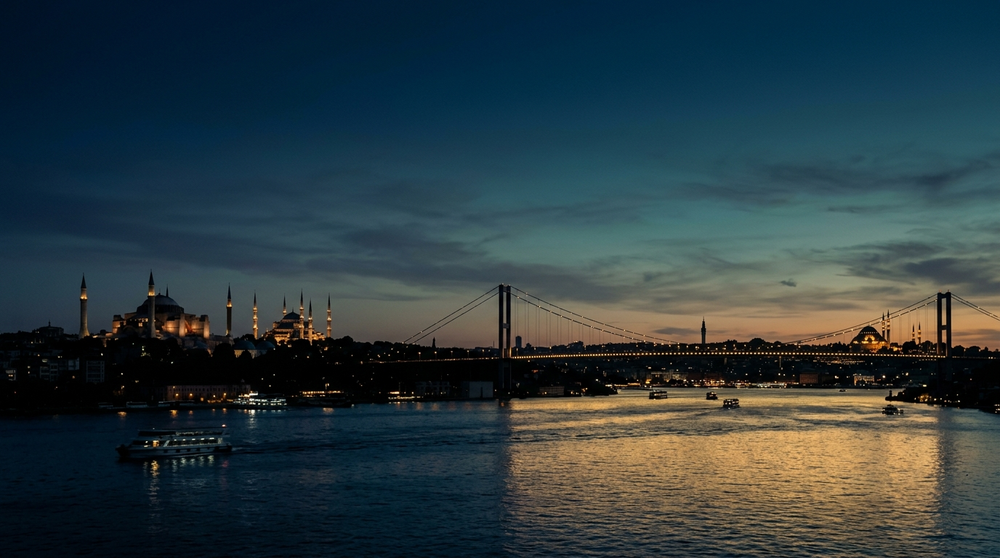

Ulusal Forum Oturumları
Yılda bir kez, tüm katılımcıları ve komitenin temsilcilerini bir araya getiren büyük ölçekli ulusal forum toplantıları.
GIUF; İstanbul'un genç liderlerini ulusal düzeyde bir araya getiren, diyalog kültürünü güçlendiren ve gençlerin politika süreçlerine anlamlı biçimde katılımını sağlayan kurumsal bir platformdur.
Ulusal forum, farklı bölgelerden ve çevrelerden gelen gençlerin yapılandırılmış bir süreç içinde ortak meseleler üzerine düşündüğü, tartıştığı ve ürettiği kurumsal bir diyalog platformudur.
Forum, katılımcıların belirlenmiş gündem maddeleri çerçevesinde yapılandırılmış şekilde tartıştığı, fikir ve önerilerin üretildiği çok sesli bir platform ortamıdır.
Gençlerin karar alma mekanizmalarına katılımı, sürdürülebilir bir demokrasi kültürünün temel taşıdır. GIUF, bu katılımı anlamlı ve yapılandırılmış bir zemine taşır.
GIUF forumu; hazırlık, komite çalışmaları, genel oturumlar ve çıktı aşamalarından oluşan sistematik bir yapıya sahiptir. Her katılımcının üstlendiği rol bellidir.

Genç İstanbullular Ulusal Forumu (GIUF), farklı arka planlardan ve ilgi alanlarından gelen gençleri ulusal meseleler etrafında bir araya getiren bağımsız ve kurumsal bir sivil toplum platformudur.
İstanbul'dan yükselen ama tüm Türkiye'ye yayılan bu ses; diplomasi, liderlik ve diyalog kültürünü genç nesillere kazandırmayı temel prensip olarak benimser.
Siyasi ve ticari etkilerden bağımsız kurumsal yapı.
Her görüşün eşit değerde temsil edildiği platform.
Yerel kökler, ulusal ve küresel vizyonla buluşur.
Tartışmadan belgeye, belgeden etkiye uzanan süreç.
Farklı görüşlerin aynı masada buluşabildiği her an, demokrasinin en canlı hali yaşanır.
GIUF'un misyonu; gençleri ulusal gündem üzerine yapılandırılmış bir diyalog sürecine dahil etmek, bu süreçten somut ve belgelenmiş çıktılar üretmek ve Türkiye'de güçlü bir sivil katılım kültürü oluşturmaktır.
Gençlerin liderlik kapasitesini müzakere ve tartışma ortamında pratik olarak pekiştirmek.
Farklı kentlerden, kesimlerden ve disiplinlerden gençlerin fikir alışverişi yapacağı ortak zemin kurmak.
Forum çıktılarını politika yapıcılara ve kamuoyuna anlamlı biçimde aktarmak.
Her forumda büyüyen, öğrenen ve güçlenen kurumsal hafızayı canlı tutmak.
GIUF'un vizyonu; gençlerin yalnızca dinlendiği değil, fikirlerinin politikaya dönüştüğü, kararların şekillendiği ve ulusal gündemi etkileyen bir platform olarak Türkiye'nin referans gençlik forumu olmaktır.
Her forum, bir sonraki neslin liderlerini yetiştirir. GIUF, bu sürecin kurumsal ve sistematik taşıyıcısıdır.
Her yıl büyüyen yapısı ve artan etkisiyle, GIUF kalıcı bir diyalog mirası oluşturmayı hedeflemektedir.
Uluslararası gençlik ağlarıyla köprü kurarak Türk gençliğinin sesini dünya sahnesine taşımak vizyonumuzun bir parçasıdır.
GIUF çatısı altında hayata geçirilecek programlar, etkinlikler ve projeler.
Yılda bir kez, tüm katılımcıları ve komitenin temsilcilerini bir araya getiren büyük ölçekli ulusal forum toplantıları.
Komite bazlı, uzman rehberliğinde yürütülen derinleşme atölyeleri ve pratik beceri geliştirme seansları.
Müzakere, kamu konuşması, strateji geliştirme ve kurumsal liderlik becerilerine odaklanan eğitim programları.
Forum çıktılarından derlenen araştırma ve politika raporları. Gençlerin önerileri belgelenerek yayınlanır.
Sivil toplum, hukuk, ekonomi ve kamu yönetimi gibi konularda gündem oluşturan seminerler ve söyleşiler.
İstanbul kimliğini ve gençlik kültürünü öne çıkaran, sivil alana katkı sağlayan kültürel ve sosyal sorumluluk projeleri.
GIUF forumu, titizlikle tasarlanmış beş aşamalı bir süreçten oluşur. Her aşama, bir sonrakini besler ve bütünlük içinde çalışır.
Katılımcılar forum gündemine önceden hazırlanır. Komite konuları, geçmiş kararlar ve ilgili politika metinleri incelenir.
Ön ÇalışmaKatılımcılar kendi komitelerinde toplanır. Gündem maddelerini derinlemesine tartışır, pozisyon geliştirip taslak metinler oluşturur.
Çalışma GruplarıKomite çalışmaları tüm katılımcıların önünde sunulur. Açık oturumlar ve müzakerelerle fikirler geliştirilir.
Açık OturumlarTüm komitelerin çıktıları bir araya gelir. Nihai kararlar oylanır, uzlaşı belgeleri hazırlanır.
Karar AşamasıForum kararları derlenerek resmi raporlar hazırlanır. Bu raporlar kamuoyuyla ve ilgili aktörlerle paylaşılır.
YayınlamaGIUF, her biri farklı bir politika alanına odaklanan komiteler aracılığıyla çalışır. Her komite, kendi alanında derinlikli tartışma ve belge üretir.
Uluslararası ilişkiler, dış politika gündemleri ve diplomatik süreçleri inceleyen komite.
İçerik GüncellenecekEkonomik politikalar, sürdürülebilir büyüme ve genç girişimciliği ele alan komite.
İçerik GüncellenecekEğitim sistemleri, gençlik politikaları ve öğrencilerin haklarına odaklanan komite.
İçerik Güncellenecekİklim değişikliği, çevre politikaları ve yeşil dönüşüm gündemlerini tartışan komite.
İçerik GüncellenecekKültürel politikalar, sanat ekosistemi ve tarihi mirasın korunmasını inceleyen komite.
İçerik GüncellenecekDijital dönüşüm, yapay zeka politikaları ve teknoloji ekosistemi gündemlerini ele alan komite.
İçerik GüncellenecekKomiteler; forumun etkinliğini artırmak, uzmanlık alanlarına göre derinlikli tartışma ortamı yaratmak ve sistematik çıktı üretmek için vazgeçilmez yapılardır.
"Bir forum, ancak güçlü komite yapılarıyla gerçek derinliğe ulaşabilir. Komiteler olmaksızın tartışma yüzeyde kalır; komitelerle kök salar."
Her komite belirli bir konuya odaklanarak derinlikli, uzman düzeyinde müzakere ortamı sağlar.
Farklı ilgi alanlarından katılımcılar kendi uzmanlıklarına uygun komitelerde en verimli katkıyı sunar.
Her komite, kendi tartışmasından somut bir politika taslağı veya rapor üretmekten sorumludur.
Forum büyüdükçe yeni komiteler eklenebilir. Yapı, esnekliği sayesinde her ölçeğe uyum sağlar.
Komite sorumluluğu, her katılımcının tartışmaya gerçek bir katkı yapmasını teşvik eder.
GIUF'ta her katılımcı belirlenmiş bir rol üstlenir. Bu roller, forum dinamiklerini dengeler ve tartışmanın kalitesini güvence altına alır.
Atak rolü, yeni öneriler masaya taşıyan, gündem maddelerini açan ve tartışmayı başlatan katılımcıyı tanımlar. Yaratıcı ve girişimci bir bakış açısıyla çözüm önerileri geliştirir.
Savunucu, belirlenen pozisyonu güçlü argümanlarla destekleyen ve karşı görüşlere yanıt veren katılımcıdır. Kritik düşünce ve ikna gücü ön plana çıkar.
Taslak Sunucu, komite tartışmalarını belgeleyerek nihai metinleri kaleme alan katılımcıdır. Müzakereleri yapılandırılmış bir çıktıya dönüştürme sorumluluğu bu roldedir.
Genel Kurul, GIUF forumunun en yetkili karar organıdır. Tüm komitelerin çıktılarını bir araya getirerek nihai tartışmayı ve oylama sürecini yönetir.
Genel Kurul'da tüm komitelerden delegeler bir araya gelir, ortak masada buluşur.
Her komite taslak sunucusu aracılığıyla çalışmalarını Genel Kurul'a aktarır.
Öneriler tartışılır, değiştirilir ya da onaylanır. Kararlar katılımcıların oylarıyla bağlayıcı hale gelir.
Ana Salon — Fotoğraf Eklenecek
Detay 1
Detay 2
GIUF ulusal forumları, İstanbul'un kültürel ve kurumsal dokusunu yansıtan özel mekânlarda düzenlenmektedir. Mekân bilgileri her forum öncesinde resmi kanallar aracılığıyla paylaşılacaktır.
GIUF'un kuruluşundan bugüne uzanan yolculuk. Her kilometre taşı, platformun büyüyen etkisini belgeler.
GIUF'un temelleri, İstanbul'daki genç liderlerin bir araya gelişiyle atılmıştır. Ulusal bir gençlik forumu ihtiyacı ilk kez bu süreçte dile getirilmiştir.
Tarih GüncellenecekGenç İstanbullular Ulusal Forumu, kurucuları tarafından resmi olarak hayata geçirilmiştir. Kuruluş ilkeleri ve tüzük çalışmaları tamamlanmıştır.
Tarih GüncellenecekPlatform, çalışma grupları ve komite yapılarıyla güçlendirilmiştir. İlk komite başkanları ve yönetim kadrosu belirlenmiştir.
Tarih GüncellenecekGIUF'un ilk büyük ölçekli ulusal forum oturumu düzenlenmiştir. Katılımcılar komiteler halinde çalışmış, Genel Kurul ile forum tamamlanmıştır.
Tarih GüncellenecekPlatform ulusal düzeyde büyümeye devam etmektedir. Yeni komiteler, yeni katılımcılar ve yeni bölge temsilcilikleri ile GIUF kapsamını genişletmektedir.
Yakın GelecekGIUF'u hayata geçiren yönetim kadrosu ve ekip yapısı. Bireysel profiller resmi duyuru sürecinde güncellenecektir.